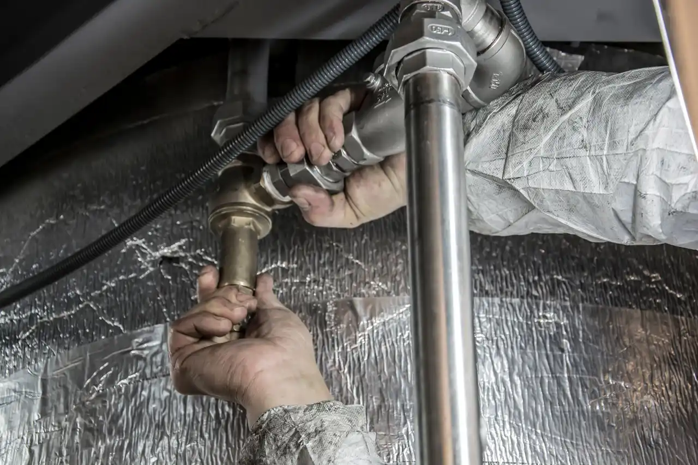

For Homes
We trace leaks in houses, condos, and rentals across Arlington Heights. You get a clear answer on where the water is coming from and what it takes to stop it.
- High water bill
- Warm floor spot
- Ceiling stain
When water shows up where it should not, our leak detection and repair Arlington Heights IL team traces the source and stops it. We handle water leak repair Arlington Heights homeowners call about most: slab leaks, pinhole pipe leaks, and running toilets that quietly spike your bill. We serve Cook County with same-day service and honest pricing.
 Meter test firstAcoustic locationPressure-tested repair
Meter test firstAcoustic locationPressure-tested repairEvery leak detection and repair Arlington Heights IL visit includes a full diagnostic, a written explanation of what we found, and a repair quote before we start. We handle supply-side leaks, drain leaks, fixture leaks, and slab leaks. If the repair requires opening a wall or floor, we explain that upfront and restore access when we are done.

We test line pressure with a gauge and check the water meter with every fixture off. If the meter still moves, the leak is on the supply side. This step tells us whether to focus on the main line, a branch line, or a fixture before we start opening anything.
We use acoustic listening equipment to hear water escaping from pipes behind walls or under concrete. This narrows the leak to a few inches, which means smaller openings and less repair work. For slab leaks, we map the line before cutting.
For drain-side leaks and underground lines, we run a RIDGID sewer camera through the pipe. You see the footage on the monitor: cracks, root intrusion, offset joints, or buildup. That footage tells us whether to repair the line or replace the section.
We repair with copper pipe, PEX tubing, PVC pipe, and proper fittings, using solder or crimp connections that meet Illinois code. We replace shut-off valves and supply lines when they are part of the failure. The repair is built to last, not patched to get you through the week.
After the repair, we pressurize the line and watch the gauge for 15 to 20 minutes. If it holds, the job is done. We walk you through what failed, what we replaced, and what to watch for. You get a plain explanation, not a sales pitch for work you do not need.
The approach is the same for a home and a business. What changes is the access, the schedule and who needs the paperwork.
We trace leaks in houses, condos, and rentals across Arlington Heights. You get a clear answer on where the water is coming from and what it takes to stop it.
We work with property managers and business owners who need leaks found without shutting down operations. Scheduling flexes around your hours and your tenants.
A plain-language look at what Leak Detection and Repair involves and when it is needed.
See how it worksLeak detection and repair Arlington Heights IL is the process of locating water escaping from your pipes, fixtures, or slab and fixing it before it damages your home. We start with a pressure gauge on the main line, then use acoustic listening equipment and a sewer camera to narrow down the source. Once we pinpoint the leak, we repair the pipe, fitting, or fixture and pressure-test the line before we leave. No guesswork, no tearing up floors to hunt for a leak we can find with the right tools.
Arlington Heights homes deal with real leak pressure. Freeze-thaw cycles crack copper pipe and push joints apart. Older galvanized lines in neighborhoods like Scarsdale and Old Arlington Heights corrode from the inside out. The sooner we trace it, the less drywall, flooring, and framing you replace.
Finding the leak first is what keeps the repair small and the cost down.

Every job follows the same five steps. You get a clear answer on where the leak is, what it takes to fix it, and what it costs before we start.
You call (224) 643-9856 and describe what you see: a wet spot, a high bill, a running toilet, or water on the floor. We ask where the meter is, whether the water is warm or cold, and how long it has been happening. That tells us whether to bring slab equipment or standard leak tools.

We walk the property, check the water meter with everything off, and test line pressure with a pressure gauge. If the meter still moves, you have a leak on the supply side. We check visible pipes, supply lines, shut-off valves, and fixtures before moving to hidden lines.

We use acoustic listening equipment, thermal readings, and a sewer camera where needed to pinpoint the leak within a few inches. For slab leak detection Arlington Heights IL jobs, we map the line under the concrete before we cut. This step usually takes 30 to 60 minutes.

We cut out the damaged section, install new copper pipe or PEX tubing with proper fittings, and solder or crimp the connection. Then we pressurize the line and watch the gauge for 15 to 20 minutes. If it holds, the repair is done. If not, we keep going until it does.

We clean the work area, restore access where we opened a wall or floor, and show you the repair. You get a plain explanation of what failed and why, plus what to watch for. If a water heater or fixture caused the leak, we note it so you can plan the next step.

Move across a circle, or focus it and press Enter, for an illustrative thermal view of the photograph.

Listens for the sound of water escaping from pipes behind walls or under concrete. It narrows the leak to a few inches so we open less of your home.

Tests line pressure and confirms whether the supply side is holding. We use it before and after every repair to prove the fix worked.

Shows the inside of drain and sewer lines on a monitor. We use it for underground leaks, root intrusion, and offset joints.

Cuts and solders copper pipe for clean, code-correct repairs. We also carry a PEX crimping tool for PEX tubing connections.

Clears grease, scale, and roots that put pressure on pipe joints. We use it when a clogged line is contributing to a leak.
Thermal views are illustrative, generated from the photographs.
Clears blockages in branch lines and fixtures. We confirm whether the problem is a clog or a broken pipe before recommending repair.
We shut off every fixture and watch the water meter. If the dial still moves, the leak is on the supply side. This single test tells us whether to focus on the main line or a fixture, and it takes about 10 minutes.
We isolate sections of the plumbing with shut-off valves and test each one with a pressure gauge. The section that loses pressure holds the leak. This narrows the search area fast, especially in larger homes with multiple bathrooms.
For slab leaks and hidden line leaks, we combine acoustic listening with thermal readings to map the pipe under the floor. We mark the line before cutting, which keeps the opening small and the repair targeted.
After drain-side repairs, we run a RIDGID sewer camera through the line to confirm the pipe is clear and the repair is sound. You see the footage, so you know the line is fixed, not just patched.
Every repair ends with a pressure test. We pressurize the line and watch the gauge for 15 to 20 minutes. If it holds, the job is done. If not, we keep working until it does.

Your water bill doubled and you cannot find any visible water in the house.
We check the meter with every fixture off. If it still moves, we use acoustic equipment to trace the leak through walls, floors, or the slab. We locate the source, repair it, and confirm the meter stops.
Outcome: You get a dry home, a normal water bill, and a clear answer on what failed and why.

You hear water running under the floor but no fixture is on.
That sound usually means a slab leak or a broken line under the foundation. We map the line with acoustic and thermal equipment, then repair it through a small access point instead of breaking up the whole floor.
Outcome: The running-water sound stops, the floor stays intact, and the repair is pressure-tested before we leave.

A ceiling stain keeps coming back after you paint over it.
Paint does not fix a leak. We trace the stain to the source, which is often a supply line, drain, or shower valve. We repair the failed part, test the line, and tell you what needs to dry before you repaint.
Outcome: The stain stops growing, the ceiling dries out, and you are not repainting the same spot next season.

Your water heater is leaking and you need hot water back today.
We diagnose the leak at the tank, fittings, or anode rod. If it is a repairable fitting or valve, we fix it on the spot. If the tank itself has failed, we quote a replacement and install it, often the same day.
Outcome: You get hot water back and a dry floor, with a clear answer on whether repair or replacement was the right call.

You are buying a home in Arlington Heights and want the plumbing checked first.
We run a pressure test, check the meter, inspect visible pipes and shut-off valves, and camera the sewer line if needed. You get a plain report on what is sound and what needs attention before closing.
Outcome: You know what you are buying, and you can negotiate repairs with real numbers instead of guesses.

Arlington Heights sits in Cook County, where freeze-thaw cycles from November through March put real stress on plumbing. Water in a pipe expands when it freezes, and that expansion cracks copper pipe and pushes joints apart. Most frozen-pipe calls we get happen after a night in the single digits, often in homes with pipes running through exterior walls or unheated crawl spaces.
Older neighborhoods like Scarsdale and Old Arlington Heights have galvanized steel lines that corrode from the inside, which leads to pinhole leaks and low water pressure. Newer builds in Westgate and Creekside use PEX tubing and copper, but slab-on-grade construction means a supply-line leak can go unnoticed under the floor.
If you are searching for affordable water leak repair in Arlington Heights, Illinois, the key is finding the leak before it damages the slab or flooring. We handle slab leak repair Arlington Heights 60004 and 60005 addresses regularly, and we know which streets have older service lines. We test every repair before we leave.

Before: The meter kept spinning with every fixture off. We confirmed a slab leak on the hot-water line and mapped it with acoustic equipment before cutting.
After: We opened one 18-inch section of concrete, repaired the copper line, and pressure-tested it for 20 minutes. The meter stopped moving, the warm spot faded within a day, and the next water bill returned to normal. Total downtime for the family was about four hours.
We recommended a yearly pressure check and a water heater anode rod inspection, since hard water shortens the life of both the anode rod and the copper line.
Before: A ceiling stain kept returning in a home near Pioneer Park even after repainting. The homeowner could not find any visible water. We traced the stain to a failed shut-off valve and a cracked supply line behind the bathroom wall, both leaking slowly for weeks.
After: We replaced the shut-off valve and supply line, pressure-tested the branch, and checked the wax ring while the wall was open. The ceiling dried out over three days, and the stain did not return. The repair took about two hours.
We told the homeowner to exercise the shut-off valves twice a year, which keeps them from seizing and failing when you need them most.
Before: The flapper had warped and the fill valve was not sealing. The cabinet base under the adjacent sink was starting to swell from a slow supply-line weep.
After: We replaced the flapper, fill valve, and supply line, then checked the toilet flange and wax ring. The running stopped the same day, and the cabinet base dried out. The next bill dropped back to the normal range.
We suggested checking the flapper every six months with a dye test in the tank, which catches a failing seal before it wastes water for a full billing cycle.
Most leaks we see in Arlington Heights fall into a handful of categories. Each one has a different cause and a different fix, and knowing which one you have saves time and money.
A leak found early means a smaller repair and a dry home.
We trace it with leak detection equipment and repair the line so the meter stops spinning when nothing is running. You see the difference on your next statement.
Slab leak detection Arlington Heights IL work is our specialty. A slab leak starts as a warm spot or the sound of running water with no fixture on. We locate it with acoustic gear and repair the line with minimal concrete cutting, often through a single access point instead of tearing up the whole room.
Water travels along joists and under flooring, so a small leak in a bathroom wall can rot the subfloor in a hallway. We dry the area, repair the pipe, and confirm the fix with a pressure test. Catching it in week one beats replacing subfloor and baseboards in month three.
We schedule same-day leak detection Arlington Heights IL appointments for active leaks and give you the price before we start. Our trucks carry copper pipe, PEX tubing, pipe fittings, and shut-off valves, so most repairs finish in one visit. You know the number before we turn a wrench.
Clear records you can keep and share.
A plain explanation of what failed
What we replaced and why
Pressure hold time after repair
Images of the repair before closing
Where the water is coming from changes how we find it and how we fix it.
Water under pressure, leaking constantly
Water only leaks when a fixture runs
Hidden under concrete or soil
A list like this tells people straight away whether you cover their street. Not listed? Call and ask: it only takes a minute.
Based in Arlington Heights and covering the places around it. Pick one for local details.
Slab leaks and underground lines cost more to locate because they need acoustic equipment and sometimes a camera. We give you the detection price on the phone and the repair price before we start.
We start at the water meter with every fixture off. If the dial still moves, the leak is on the supply side. From there we use a pressure gauge to isolate sections, acoustic listening equipment to hear water escaping, and a sewer camera for drain-side leaks. Thermal readings help with slab leaks. Most hidden leaks are located within 30 to 60 minutes without opening walls.
A slab leak is a water line under your concrete foundation that has failed. We locate it with acoustic equipment, then repair the line through a small access point rather than breaking up the whole floor.
Yes. We schedule same-day leak detection Arlington Heights IL appointments for active leaks and carry copper pipe, PEX tubing, and fittings on every truck. Most supply-line and fixture leaks are repaired in one visit, usually within two to four hours. Slab leaks may need a second visit if concrete cutting is involved, and we tell you that upfront.
Other services from the same team.
If water is where it should not be, every hour counts. Call (224) 643-9856 and we will schedule a same-day visit, find the leak, and give you the repair price before we start.
Call (224) 643-9856 or email us and we will get back to you fast. Tell us what is going on and we will tell you what it takes to fix it.